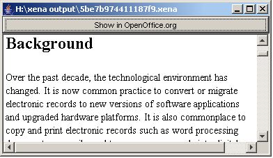

Normalise Office Document File
When normalising Office documents such as those created by Microsoft Word, Xena uses the Office plugin. This is included as part of the basic Xena application. You will also need to install and configure OpenOffice.org. See About the Office plugin for configuring the Office plugin for use with OpenOffice.org. Before you can normalise a document, you will need to have installed OpenOffice.org.
Xena currently supports normalisation of the following office document types:
- Microsoft Word
- Microsoft Excel
- Microsoft Powerpoint
- StarOffice and OpenOffice.org Writer (word processor)
- StarOffice and OpenOffice.org Calc (spreadsheet)
- StarOffice and OpenOffice.org Impress (presentation)
It is anticipated that other common formats will be added to this list in the future.
To normalise an Office document
- Open Xena.
- From the File menu, select Normalise.
- Using the Open window, navigate to and select the document you wish to normalise.
- Click on Open.
The Choose File Type dialogue box will open, asking you to choose the file type of the document you are opening.
- Select Word Processor, Spreadsheet or Presentation from the drop down list, depending on the type of office document you are normalising and click OK.
Xena will display the normalised office document

- At the top of the display window is a Show in OpenOffice.org button. Clicking on this button will open the document in OpenOffice.org
The document has now been normalised into the Xena-Office format.
See Also
Batch Normaliser